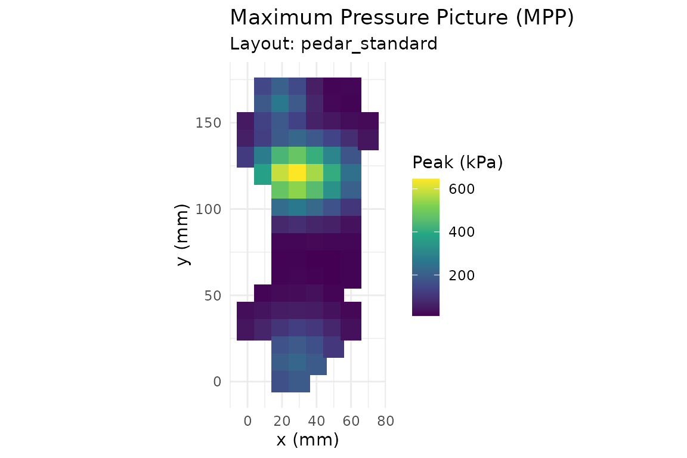
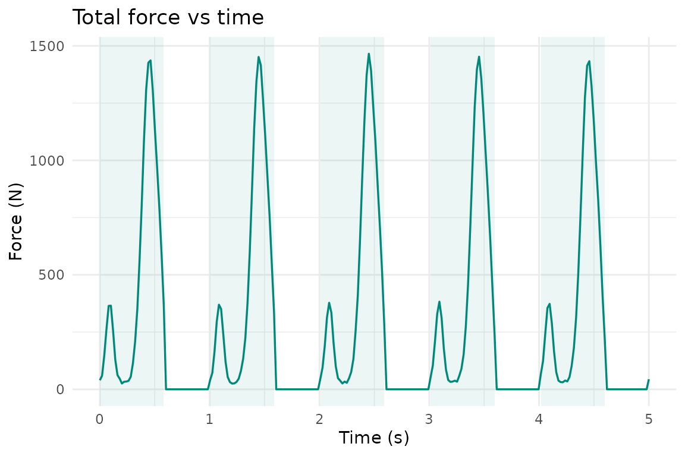

What pressR does
pressR parses, analyzes, and visualizes pressure distribution data from capacitive sensor systems. It provides:
- Predefined sensor layouts (in-shoe insoles, pressure platforms, saddle mats, seating mats, glove sensors),
- Parsers for ASCII and CSV pressure data files,
- A full analysis pipeline (per-frame metrics, trial summaries, regional analysis, gait-cycle detection, saddle-fit checks),
-
ggplot2-based visualization and composite reports, - An interactive Shiny application for data exploration.
Load a layout
Every trial is tied to a pr_layout object that describes
the sensor geometry. For example, a 99-sensor in-shoe pressure
insole:
layout <- pr_layout_insole()
print(layout)
#>
#> ── pr_layout: insole_standard ──────────────────────────────────────────────────
#> In-shoe pressure insole (99 sensors, standard).
#> • Manufacturer: ""
#> • Model: "insole"
#> • Grid: 18 x 8
#> • Active sensors: 99
#> • Sensor area: 1.5 cm²
#> • Pressure range: 0 - 1200 kPa
#> • Regions: 7
#> Region names: "heel", "midfoot", "metatarsal_1", "metatarsal_2_3",
#> "metatarsal_4_5", "hallux", and "lesser_toes"Generate a synthetic example trial
pr_example_trial() produces realistic synthetic data for
each supported application. This is useful for quick demos, tests, and
vignettes.
trial <- pr_example_trial("insole")
trial
#>
#> ── pr_trial ────────────────────────────────────────────────────────────────────
#> • System: "insole"
#> • Layout: "insole_standard"
#> • Frames: 250
#> • Duration: 5 s
#> • Sampling: 50 Hz
#> • Sensors: 99
#> • Subject: "EX01"
#> • Date: "2026-05-04"
#> • Condition: "walking"Visualize
The default plot method draws a maximum-pressure picture (MPP):
pr_plot_heatmap(trial)
Time-domain curves are equally straightforward:
pr_plot_force_time(trial, show_cycles = TRUE)
Summarize
pr_summary() returns a single-row tibble containing the
common biomechanical parameters:
pr_summary(trial)
#> # A tibble: 1 × 14
#> mpp mvp max_force mean_force max_contact_area mean_contact_area
#> <dbl> <dbl> <dbl> <dbl> <dbl> <dbl>
#> 1 646. 43.0 1466. 289. 128. 60.9
#> # ℹ 8 more variables: contact_time <dbl>, pti_max <dbl>, pti_mean <dbl>,
#> # impulse <dbl>, cop_path_length <dbl>, cop_velocity_mean <dbl>,
#> # cop_range_ap <dbl>, cop_range_ml <dbl>Regional analysis
With the insole layout’s default region masks you get one row per anatomical region:
pr_calc_regional(trial)
#> # A tibble: 7 × 6
#> region mpp mvp max_force contact_area pti_mean
#> <chr> <dbl> <dbl> <dbl> <dbl> <dbl>
#> 1 heel 220. 15.0 357. 42 40.2
#> 2 midfoot 646. 59.6 1248. 61.5 155.
#> 3 metatarsal_1 130. 23.0 41.9 6 65.4
#> 4 metatarsal_2_3 224. 43.3 116. 9 127.
#> 5 metatarsal_4_5 137. 15.9 49.1 9 43.8
#> 6 hallux 265. 29.9 120. 6 83.8
#> 7 lesser_toes 190. 12.9 73.1 12 30.0Export
Results can be exported as CSV:
tmp <- tempfile(fileext = ".csv")
pr_export_csv(trial, tmp, what = "summary")Launch the Shiny app
pr_run_app(trial)